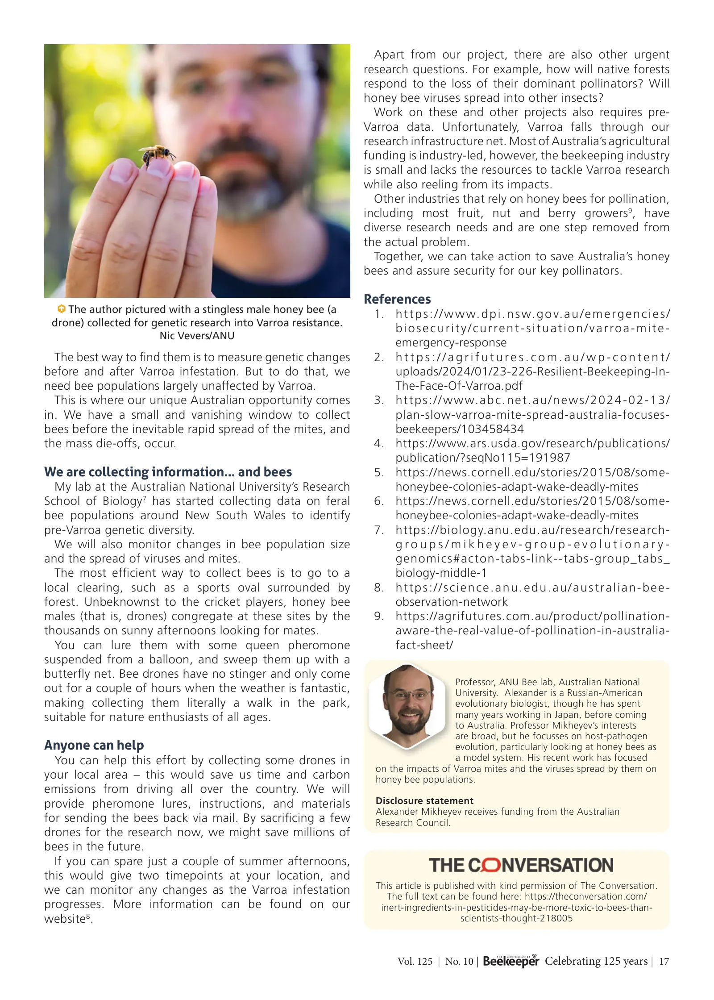

The author pictured with a stingless male honey bee (a
drone) collected for genetic research into Varroa resistance.
Nic Vevers/ANU
Professor, ANU Bee lab, Australian National
University. Alexander is a Russian-American
evolutionary biologist, though he has spent
many years working in Japan, before coming
to Australia. Professor Mikheyev’s interests
are broad, but he focusses on host-pathogen
evolution, particularly looking at honey bees as
a model system. His recent work has focused
on the impacts of Varroa mites and the viruses spread by them on
honey bee populations.
Disclosure statement
Alexander Mikheyev receives funding from the Australian
Research Council.
This article is published with kind permission of The Conversation.
The full text can be found here: https://theconversation.com/
inert-ingredients-in-pesticides-may-be-more-toxic-to-bees-than-
scientists-thought-218005
The best way to find them is to measure genetic changes
before and after Varroa infestation. But to do that, we
need bee populations largely unaffected by Varroa.
This is where our unique Australian opportunity comes
in. We have a small and vanishing window to collect
bees before the inevitable rapid spread of the mites, and
the mass die-offs, occur.
We are collecting information… and bees
My lab at the Australian National University’s Research
School of Biology7 has started collecting data on feral
bee populations around New South Wales to identify
pre-Varroa genetic diversity.
We will also monitor changes in bee population size
and the spread of viruses and mites.
The most efficient way to collect bees is to go to a
local clearing, such as a sports oval surrounded by
forest. Unbeknownst to the cricket players, honey bee
males (that is, drones) congregate at these sites by the
thousands on sunny afternoons looking for mates.
You can lure them with some queen pheromone
suspended from a balloon, and sweep them up with a
butterfly net. Bee drones have no stinger and only come
out for a couple of hours when the weather is fantastic,
making collecting them literally a walk in the park,
suitable for nature enthusiasts of all ages.
Anyone can help
You can help this effort by collecting some drones in
your local area – this would save us time and carbon
emissions from driving all over the country. We will
provide pheromone lures, instructions, and materials
for sending the bees back via mail. By sacrificing a few
drones for the research now, we might save millions of
bees in the future.
If you can spare just a couple of summer afternoons,
this would give two timepoints at your location, and
we can monitor any changes as the Varroa infestation
progresses. More information can be found on our
website8.
Apart from our project, there are also other urgent
research questions. For example, how will native forests
respond to the loss of their dominant pollinators? Will
honey bee viruses spread into other insects?
Work on these and other projects also requires pre-
Varroa data. Unfortunately, Varroa falls through our
research infrastructure net. Most of Australia’s agricultural
funding is industry-led, however, the beekeeping industry
is small and lacks the resources to tackle Varroa research
while also reeling from its impacts.
Other industries that rely on honey bees for pollination,
including most fruit, nut and berry growers9, have
diverse research needs and are one step removed from
the actual problem.
Together, we can take action to save Australia’s honey
bees and assure security for our key pollinators.
References
1. https://www.dpi.nsw.gov.au/emergencies/
biosecurity/current-situation/varroa-mite-
emergency-response
2. h t t p s : / / a g r i f u t u re s . c o m . a u / w p - c o n t e n t /
uploads/2024/01/23-226-Resilient-Beekeeping-In-
The-Face-Of-Varroa.pdf
3. https://www.abc.net.au/news/2024-02-13/
plan-slow-varroa-mite-spread-australia-focuses-
beekeepers/103458434
4. https://www.ars.usda.gov/research/publications/
publication/?seqNo115=191987
5. https://news.cornell.edu/stories/2015/08/some-
honeybee-colonies-adapt-wake-deadly-mites
6. https://news.cornell.edu/stories/2015/08/some-
honeybee-colonies-adapt-wake-deadly-mites
7. https://biology.anu.edu.au/research/research-
g r o u p s / m i k h e y e v - g r o u p - e v o l u t i o n a r y -
genomics#acton-tabs-link--tabs-group_tabs_
biology-middle-1
8. https://science.anu.edu.au/australian-bee-
observation-network
9. https://agrifutures.com.au/product/pollination-
aware-the-real-value-of-pollination-in-australia-
fact-sheet/
Vol. 125 | No. 10 |
Celebrating 125 years | 17